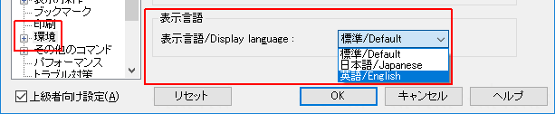
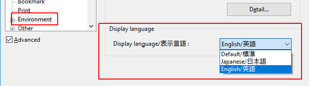
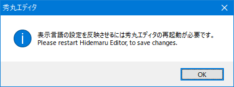
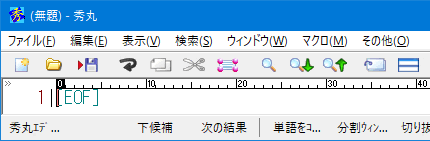
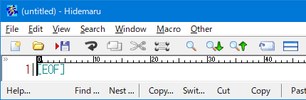
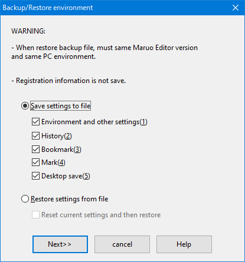
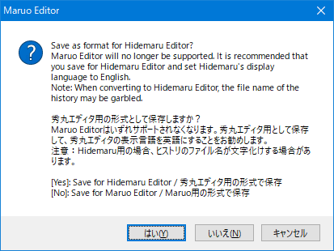
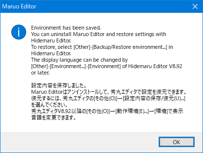

秀丸エディタ Ver.8.92以降では「表示言語の切替」が可能です。
現状では、以下の言語へ切り替え可能です。
「表示言語」の設定は、「動作環境」-「環境」-「表示言語」から行います。
(英語表記の場合「Environment」-「Environment」-「Display language」)
「表示言語」が日本語の場合

「表示言語」が英語の場合

「表示言語」を切り替えて、「OK」で「動作環境」のダイアログを閉じると、以下のメッセージが表示されます。

起動している秀丸エディタ(常駐秀丸エディタを含む)をすべて終了し、再起動すると「表示言語」が切り替わります。
「表示言語」が日本語の場合

「表示言語」が英語の場合

「英語版(Maruo)」を使用していた場合、「日本語版(Hidemaru)」を使うと、設定保存場所の違いから初期状態で使うことになります。設定の移行は可能で、「英語版(Maruo)」で設定を保存するときに、「日本語版(Hidemaru)」用として保存できます。 (英語版(Maruo) Ver.8.92以降)
MaruoからHidemaruへの移行方法 も参照。 (送金の情報は移行されませんが、「日本語版(Hidemaru)」に 「英語版(Maruo)」で入力した内容を入力することが可能とのこと)
「英語版(Maruo)」で、メニューの「Other」-「Backup/Restore environment」を選ぶ。
ダイアログが表示されるので「Save settings to file」を選び、移行したい内容にチェックを入れ、「Next>>」ボタンを押す。

保存形式を問い合わせるダイアログが表示されます。「Yes」を選べば、「日本語版(Hidemaru)」へ対応した形式になります。

保存ファイル名を問い合わせるダイアログが表示されるので、適当なファイル名を付けて保存します。
保存後、メッセージが表示されるので、それに従って設定を移行します。
「英語版(Maruo)」は設定の移行を確認してからアンインストールした方がいいでしょう。
